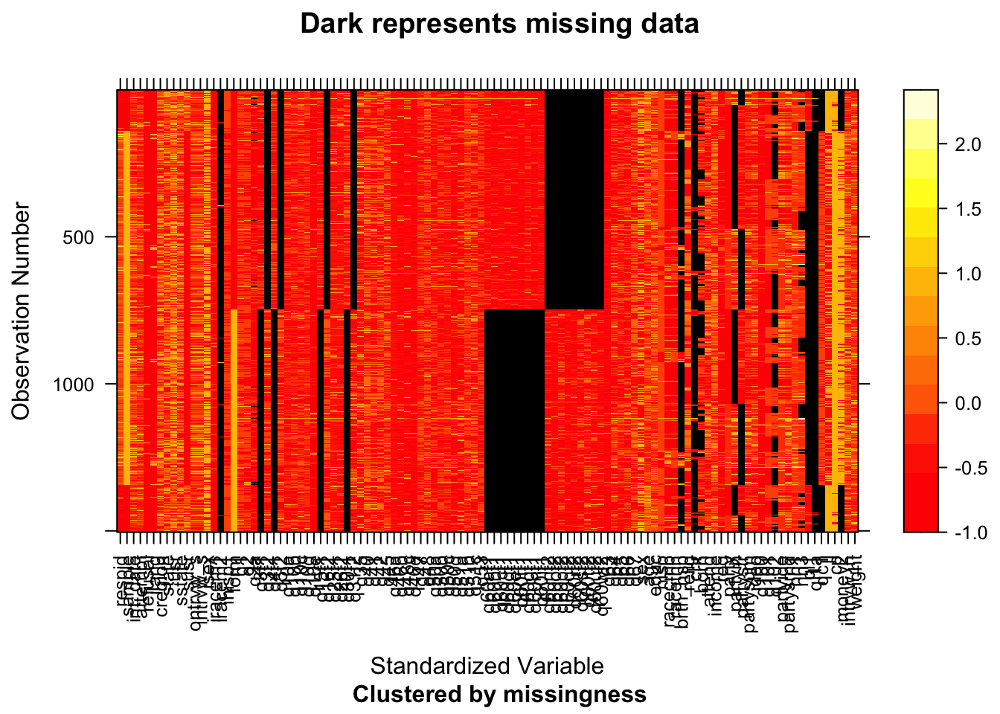

Chapter 4 Missing values
## NOTE: The following pairs of variables appear to have the same missingness pattern.
## Please verify whether they are in fact logically distinct variables.
## [,1] [,2]
## [1,] "q3f2" "q5f2"
## [2,] "q3f2" "q16f2"
## [3,] "q3f2" "q31f2"
## [4,] "q3f2" "q60nf2"
## [5,] "q3f2" "q60of2"
## [6,] "q3f2" "q60pf2"
## [7,] "q3f2" "q60qf2"
## [8,] "q3f2" "q60rf2"
## [9,] "q3f2" "q60sf2"
## [10,] "q3f2" "q60tf2"
## [11,] "q3f2" "q60uf2"
## [12,] "q3f2" "q60wf2"
## [13,] "q5f2" "q16f2"
## [14,] "q5f2" "q31f2"
## [15,] "q5f2" "q60nf2"
## [16,] "q5f2" "q60of2"
## [17,] "q5f2" "q60pf2"
## [18,] "q5f2" "q60qf2"
## [19,] "q5f2" "q60rf2"
## [20,] "q5f2" "q60sf2"
## [21,] "q5f2" "q60tf2"
## [22,] "q5f2" "q60uf2"
## [23,] "q5f2" "q60wf2"
## [24,] "q16f2" "q31f2"
## [25,] "q16f2" "q60nf2"
## [26,] "q16f2" "q60of2"
## [27,] "q16f2" "q60pf2"
## [28,] "q16f2" "q60qf2"
## [29,] "q16f2" "q60rf2"
## [30,] "q16f2" "q60sf2"
## [31,] "q16f2" "q60tf2"
## [32,] "q16f2" "q60uf2"
## [33,] "q16f2" "q60wf2"
## [34,] "q31f2" "q60nf2"
## [35,] "q31f2" "q60of2"
## [36,] "q31f2" "q60pf2"
## [37,] "q31f2" "q60qf2"
## [38,] "q31f2" "q60rf2"
## [39,] "q31f2" "q60sf2"
## [40,] "q31f2" "q60tf2"
## [41,] "q31f2" "q60uf2"
## [42,] "q31f2" "q60wf2"
## [43,] "q60nf2" "q60of2"
## [44,] "q60nf2" "q60pf2"
## [45,] "q60nf2" "q60qf2"
## [46,] "q60nf2" "q60rf2"
## [47,] "q60nf2" "q60sf2"
## [48,] "q60nf2" "q60tf2"
## [49,] "q60nf2" "q60uf2"
## [50,] "q60nf2" "q60wf2"
## [51,] "q60of2" "q60pf2"
## [52,] "q60of2" "q60qf2"
## [53,] "q60of2" "q60rf2"
## [54,] "q60of2" "q60sf2"
## [55,] "q60of2" "q60tf2"
## [56,] "q60of2" "q60uf2"
## [57,] "q60of2" "q60wf2"
## [58,] "q60pf2" "q60qf2"
## [59,] "q60pf2" "q60rf2"
## [60,] "q60pf2" "q60sf2"
## [61,] "q60pf2" "q60tf2"
## [62,] "q60pf2" "q60uf2"
## [63,] "q60pf2" "q60wf2"
## [64,] "q60qf2" "q60rf2"
## [65,] "q60qf2" "q60sf2"
## [66,] "q60qf2" "q60tf2"
## [67,] "q60qf2" "q60uf2"
## [68,] "q60qf2" "q60wf2"
## [69,] "q60rf2" "q60sf2"
## [70,] "q60rf2" "q60tf2"
## [71,] "q60rf2" "q60uf2"
## [72,] "q60rf2" "q60wf2"
## [73,] "q60sf2" "q60tf2"
## [74,] "q60sf2" "q60uf2"
## [75,] "q60sf2" "q60wf2"
## [76,] "q60tf2" "q60uf2"
## [77,] "q60tf2" "q60wf2"
## [78,] "q60uf2" "q60wf2"Using the missing_data.frame function from package mi, we find the above results have really clear patterns in the level of missingness. All variables in sharing the same missing patterns have a similar name, with the first half indicating the question number, and the second half displaying a letter with either f1 or f2. It is worthwhile to look at how the questionnaire is formed to understand the patterns of missing values.

The mi package also gives a visualization of missing values in the data frame. Below, we also utilzie another package extracat to visualize missing values across rows and columns.

Based on the two graphs above, we can observe some big clusters of missing values (multiple columns) and some individual columns of missing values. Since each column consists of a single interview question, this basically indicates a great number of no-response to particular questions and has something to do with the survey methodology. After taking a closer look, we find the following insights on missing values:
There are if-else flows in the formation of survey questions, meaning that some questions were only asked if the respondent selects a particular answer to its preceding question. For instance, in the question
q2about whether or not the respondent approves the way Donald Trump is handling his job as President, the following questionq2aabout how strongly the respondent approves or disapproves it was only asked to those who gave an affirmative answer (approve or disapprove) toq2, leaving those who refused to answerq2a missing value inq2a.The survey is divided into form 1 and form 2 respondents, each a random half sample. This is the reason why there are big clusters of missing-value columns. For every question that has a notation of either “F1” or “F2”, for instance, variable
q3f1,q3f2, it only asks half of all survey respondents. This can also explain the “complementary” characteristic of missing-value columns. If we look at the big clusters in the middle of the graph above, if we add the two clusters together, the number of observations with a missing value in should just be the number of all survey respondents. For this kind of questions, we would be comfortable removing missing values in our later visualizations.